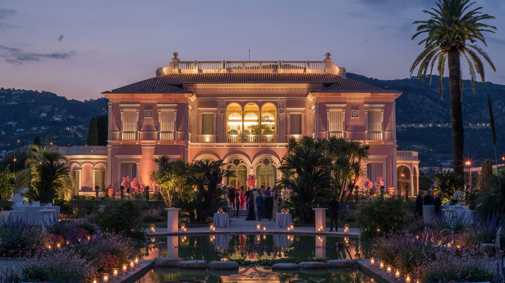
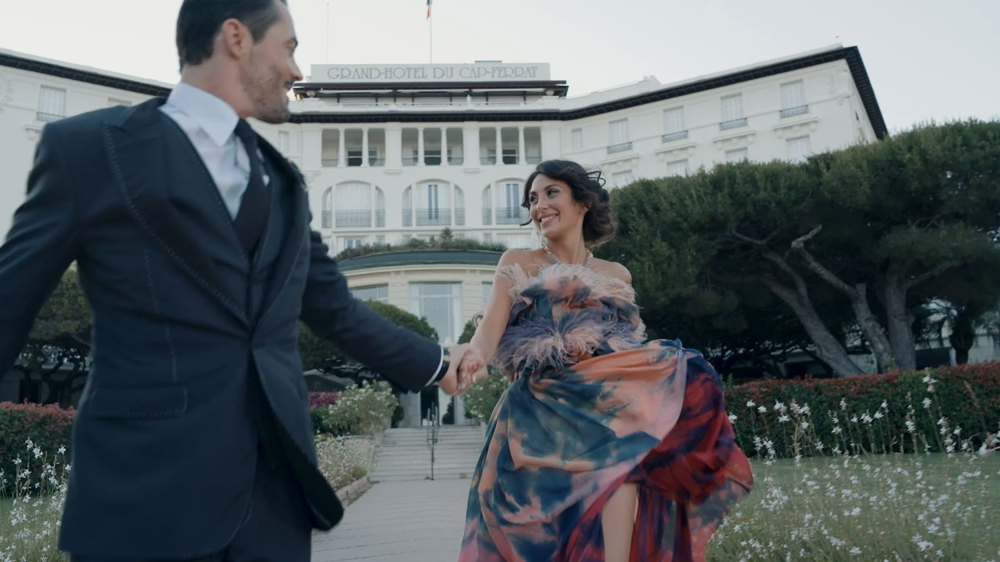
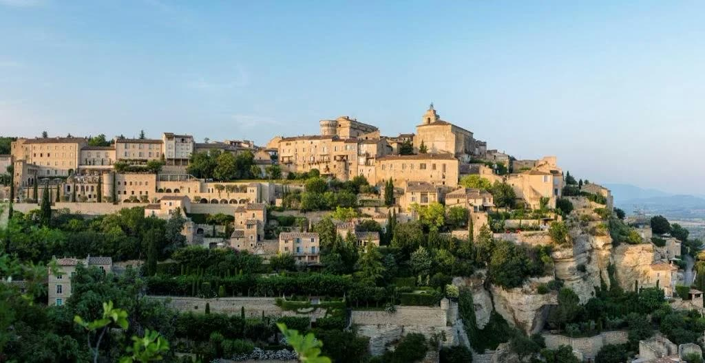
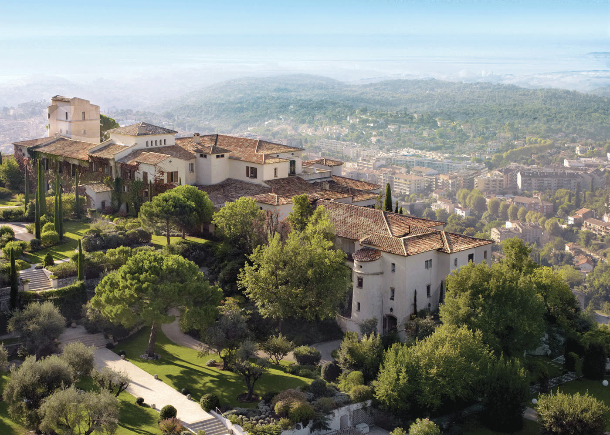
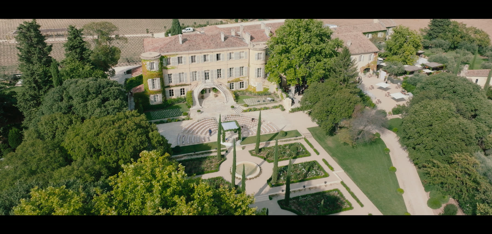
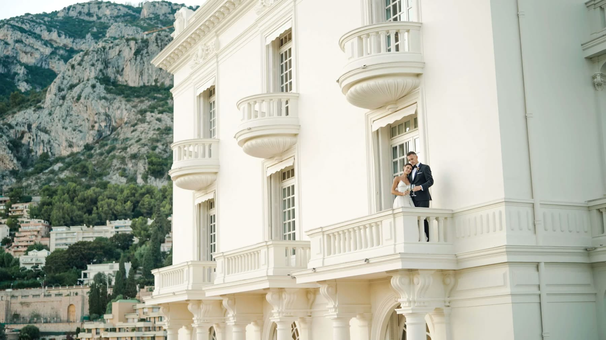
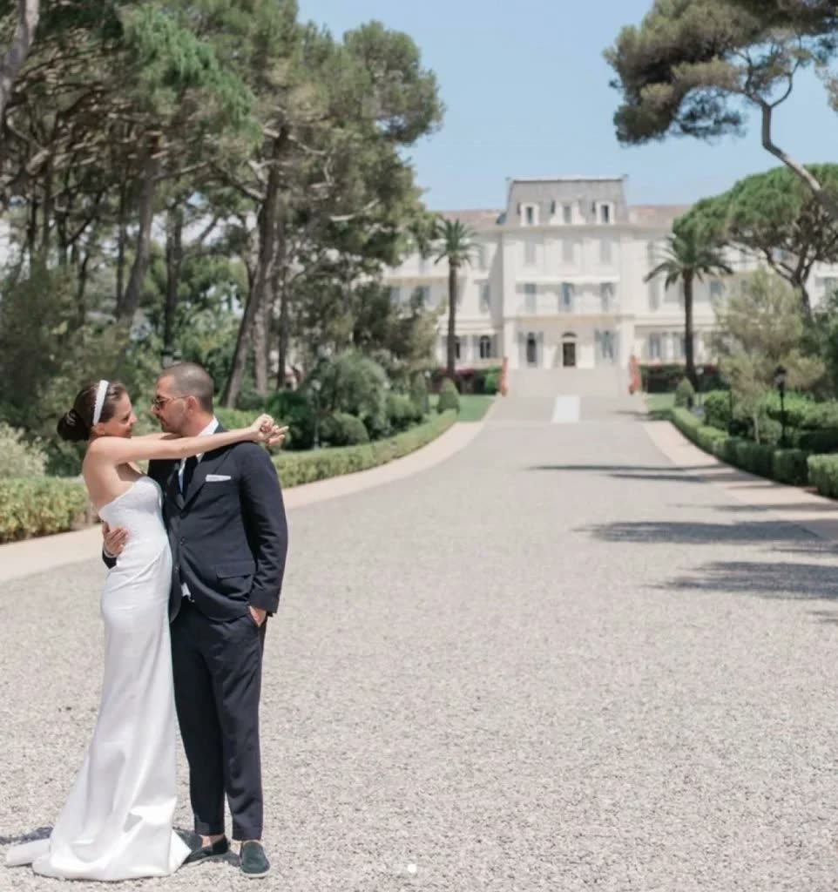

— Journal · Guide
Dreaming of a fairytale wedding bathed in the golden light of the French Riviera, or nestled amidst the lavender fields of Provence? This breathtaking region offers a symphony of romance, from sun-drenched coastlines to charming, rustic estates. Choosing the perfect venue can be overwhelming, so here are some of the most enchanting locations to celebrate your love story.
Villa Ephrussi de Rothschild is a fairytale on the Côte d'Azur. This rose-pink palace, dreamed up by Béatrice de Rothschild, is wrapped in nine thematic gardens ... French, Florentine, Spanish, a stone garden, a Japanese garden and more ... each one a masterpiece of colour and design, and each a magical backdrop for your ceremony and portraits. It remains one of the most requested venues on the Riviera, and for good reason: nowhere else gives you this much romance in a single frame.

The Grand-Hôtel du Cap-Ferrat, a Four Seasons Hotel, answers with timeless elegance. Picture your ceremony held in the central aisle of the gardens, the hotel rising behind you and the Mediterranean stretching to the horizon ... a setting that is genuinely hard to top. Once dinner is over, the celebration drifts down to the Club Dauphin, where the party carries on around the pool at the water's edge.

Perched atop one of the most beautiful hilltop villages in France, the Bastide de Gordes offers sweeping panoramic views over the Luberon valley. Housed in a restored 17th-century farmhouse, it pairs rustic Provençal character with true five-star polish: a ceremony infused with the light of the countryside, then a reception on the terrace as the valley turns gold at sunset.

Nestled amid the hills above Vence, Château Saint-Martin & Spa blends luxury with rustic charm. Parts of the estate date to the 12th century, and it offers a tranquil spa, gourmet dining and long views down to the sea. Imagine your ceremony in the courtyard, surrounded by cypress and olive trees, followed by a reception under a marquee built especially for the occasion. Magical.

For a truly grand affair, Château d'Estoublon is the epitome of Provençal opulence. This 18th-century estate, wrapped in olive groves and vineyards, gives you a chapel for the ceremony, a lavish garden reception, fireworks over the grounds and a live band to carry the party deep into the night.

Perched above the Baie des Anges, Villa La Vigie brings Art Deco charm and breathtaking panoramic views. Once a residence of Winston Churchill and later home to Karl Lagerfeld, the villa is the chic French Riviera style at its purest ... a ceremony on the terrace with the sea as your backdrop, and a reception in the gardens beneath the stars.

And then there is the Hôtel du Cap-Eden-Roc, a true Riviera paradise. Its famous aisle runs from the hotel down through the pines to the ceremony spot ... the very setting Dior chose for its campaign with Natalie Portman, just to give you a sense of the drama. Spend the day beside the legendary seawater pool at the edge of the Mediterranean, then celebrate under the stars with the gentle sea breeze, and you will never quite see the world the same way again.

With its stunning scenery, exquisite venues and rich culture, Provence and the French Riviera offer the perfect setting for a wedding you and your guests will cherish forever. And if you need help planning your destination wedding, we know a few wedding planners who would be delighted to help.
— Begin Your Journey